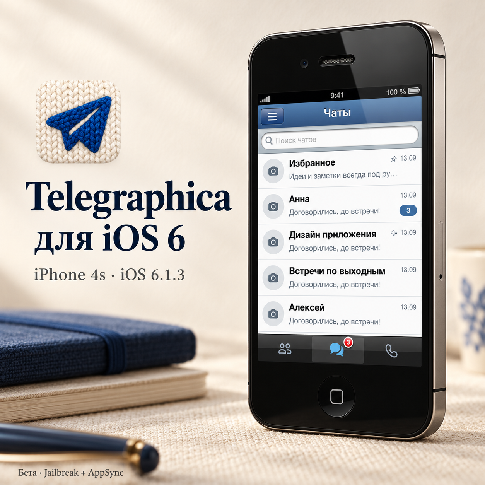
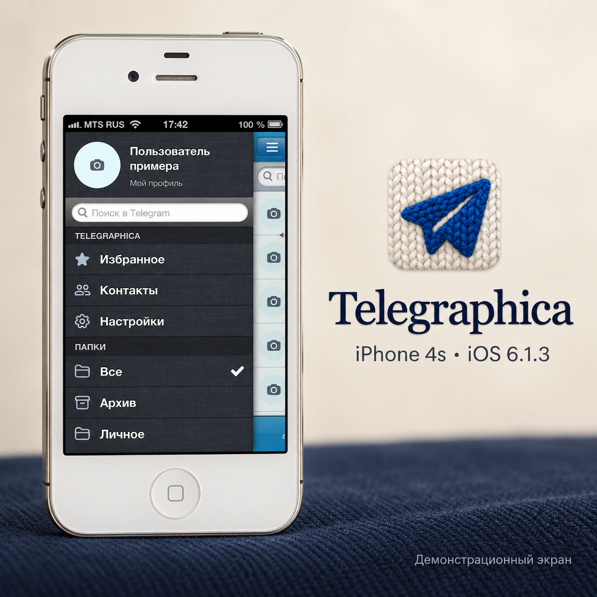
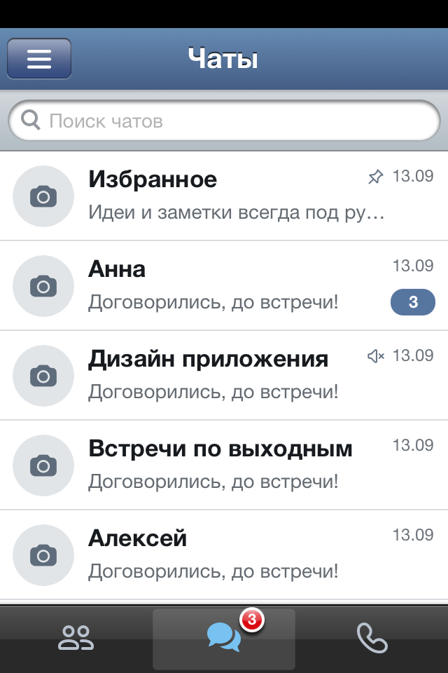
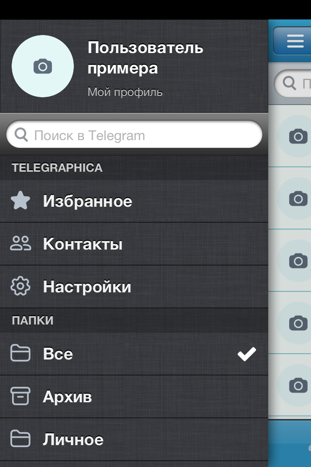
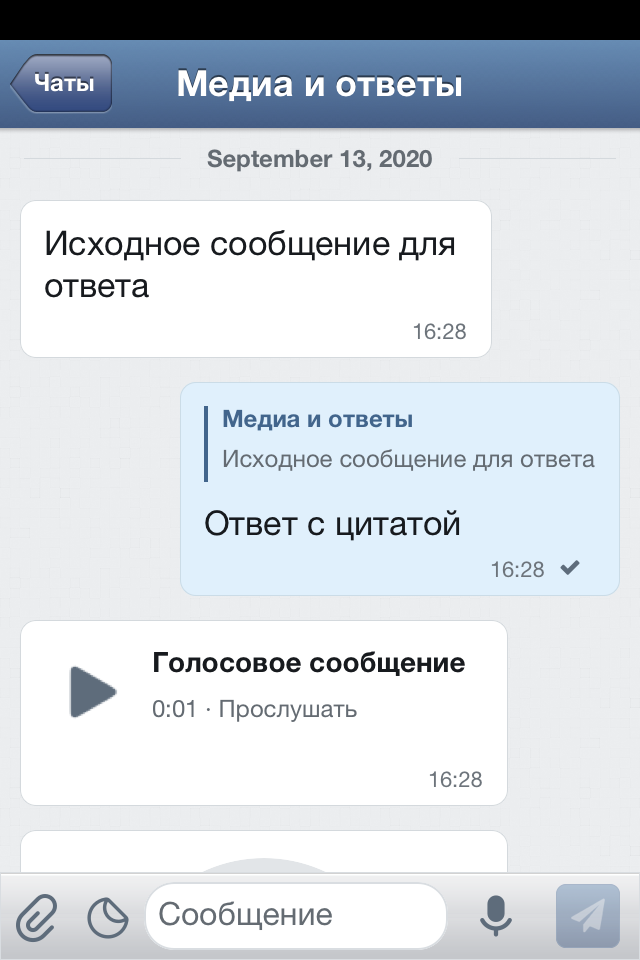

MiChiRose — репозиторий Cydia · Установка · Другие пакеты
Telegraphica для iOS 6
Telegram в духе классического iPhone: фактурные темы, привычная переписка и новая жизнь любимого устройства.
Бета 1 · Сборка 53 · iOS 6 / ARMv7 · Jailbreak + AppSync

Адрес для ручного добавления:https://michirose.github.io/cydia/
Как установить
Всё делается на iPhone. Терминал и компьютер не нужны.
- Проверьте требования: iOS 6, ARMv7, jailbreak и Cydia. Проверено на iPhone 4s / iOS 6.1.3. Если AppSync Unified ещё нет, сначала установите совместимую с iOS 6 версию из доверенного источника. Здесь AppSync не распространяется.
- Добавьте источник: Cydia → Управление → Источники → Изменить → Добавить. Введите
https://michirose.github.io/cydia/и дождитесь завершения обновления списка. - Установите приложение: откройте источник MiChiRose → Telegraphica → Установить → Подтвердить. Telegraphica Background и Telegraphica Updater установятся автоматически; выбирайте полное приложение, а не только службу.
- Войдите в свой аккаунт: откройте Telegraphica и выберите «Войти по QR-коду». На другом устройстве: Telegram → Настройки → Устройства → Подключить устройство. Отсканируйте код с экрана старого iPhone.
Текущие версии: Telegraphica 0.1.0~beta1-53 и Background 0.1.0-25, Updater 0.1.0-1.
Для обновления не удаляйте приложение. Обновите список в Cydia и установите новую версию поверх текущей. Этот путь обновления ранее проверен с сохранением входа на iPhone 4s / iOS 6.1.3. Удаление иконки с домашнего экрана может удалить локальные данные.
Если источник пустой, обновите список и проверьте адрес. Старый источник /telegraphica-cydia/ или локальный источник разработчика можно удалить из списка, сохранив установленные пакеты. Если Cydia требует AppSync, сначала установите его совместимую версию.
Что нового в сборке 53
- Новое ядро Telegram: исправлены ранее неподдерживаемые опросы с несколькими ответами и добавляемыми вариантами.
- Голосование прямо в переписке, системные строки событий вместо пузырей сообщений.
- Переход к первому ответу в текущей группе без вложенного экрана.
- Перед переходом на новое ядро создаётся защитная копия базы только на устройстве. Первый запуск может занять некоторое время.
Устанавливайте поверх текущей версии, приложение не удаляйте. После обновления формата базы не устанавливайте старую сборку поверх новой.
Расписание пока для текста. Новые функции прошли программные проверки и iOS 6 Simulator; реальное голосование и отправку ещё предстоит проверить на телефоне.
Что умеет Telegraphica
Личные диалоги, группы, папки и темы форумов; фотографии и файлы; голосовые сообщения и видеокружки; ответы, стикеры и реакции; классические темы и Aqua.
Фоновая jailbreak-служба принимает уведомления и при закрытом приложении. Длительный расход батареи ещё проверяется.




Бета: ограничения и загрузки
Telegraphica — неофициальный клиент Telegram. Настоящие аудио- и видеозвонки пока не реализованы; поиск музыки имеет известные проблемы. Прокси настраивается в приложении, в том числе до входа. Другие устройства пока не прошли такую же проверку. Обычная iOS без jailbreak, iOS 7 и новее не поддерживаются.
Сборку 53 можно установить из Cydia или из приложения, если уже установлена сборка 46 или новее с Updater. В Telegraphica откройте «Настройки → Обновления → Проверить обновления», скачайте пакет, нажмите «Установить и закрыть» и снова откройте приложение. Переходы до сборки 48 ранее проверены владельцем с сохранением входа.
Скачать IPA · Все файлы релиза
IPA требует совместимого jailbreak-установщика и AppSync. Загрузка в Safari сама по себе не устанавливает приложение; фоновая служба и компонент обновлений в IPA не устанавливаются автоматически. Для полного комплекта используйте Cydia.
Текстовая инструкция · Контрольные суммы источника · README на GitHub
В пакетах нет сессии, переписки, контактов, кэша и ключей базы. Каждый пользователь входит в свой аккаунт. Индексы пока без подписи APT. Исходники Telegraphica хранятся отдельно. Для отзыва укажите модель, версию iOS, сборку и шаги ошибки; коды входа, пароли и переписку не присылайте.
Другие пакеты MiChiRose
Weather Fix — Alpha 7
Только исправление штатной «Погоды»: без дополнительного приложения и иконки. В Cydia выберите 0.1.0~alpha7-1. Исправлена обработка сохранённого местоположения; проверка новой версии на телефоне продолжается.
Open-Meteo напрямую, без своего сервера и API-ключа, с локальным современным TLS. Настройки GPS и список городов не меняются. Перед установкой удалите WeatherX; MapsX можно оставить.
Совместимость и зависимости определяются отдельно для каждого пакета.
AirPods Fix — Alpha 1
Экспериментальная адаптация исправления Dane Bentley для тишины при смене песни и отключений AirPods на iOS 6.1.3. Код BTServer сопоставлен с iPhone 4s; работа с наушниками и звонками пока не проверена. iPhone 5 требует идентичной проверенной сборки BTServer.
Совместимость, установка и ограничения. После установки или удаления перезагрузите iPhone вручную.
Cellular Data in Settings
Переключатель «Сотовые данные» под Bluetooth на главном экране «Настроек» iPhone с iOS 6.1.3. Установите пакет в Cydia, закройте «Настройки» через меню недавних приложений и откройте снова.